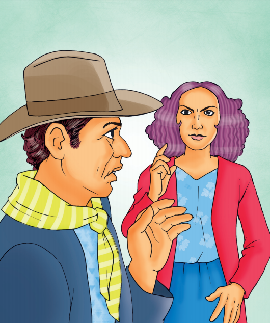

Reflexiono para avanzar
Alumno:
Reflexiono para avanzar
Alumno:
1. ¿Crees que el teatro puede servir para hacer crítica social? ¿Por qué?
2. Lee los siguientes fragmentos y reconoce sus características y contenido.
Receta para viajar
(Fragmento)
Personajes
DON COLÁS y su esposa CIPRIANA
Acto I
Escena I
(Habitación de DON COLÁS)
CIPRIANA (Sola)
Tres postas han ido hoy día
y no viene mi marido.
Si quedarse ha decidido
mucho me fastidiaría.
Aunque en extremo ocupado
en nuestra hacienda se hallara,
en tratándose de Clara
debe dejar todo a un lado.
¡Hija de mi corazón!
¡Cuánto fuera desgraciada
con el tal Diego casada,
ese triste pobretón…!
[…]
Escena II
(CIPRIANA y COLÁS, que llega en traje de campo.)
COLÁS
¡Oh, diablos! ¿Qué ha sucedido?
Ya de agitación no me hallo,
temo muera mi caballo
por lo mucho que ha corrido.
CIRPIANA
Calma Colás tu inquietud,
no tengas ningún recelo,
que viene dicha del cielo
a premiar nuestra virtud.
[…]
COLÁS
Sábete, pues, que he dejado
las cosas a medio hacer;
nada he podido vender,
todo quedó abandonado,
y olvidé yo no sé como
aun las llaves de la troje
y hará cuanto se le antoje
el bribón del mayordomo.
[…]
CIRPIANA
Pues, escúchame, Colás,
ya verás que en un momento
te voy a dar un contento
que no has sentido jamás.
Helo aquí: fuimos a ver
a nuestra prima Tomasa,
a esa envidiosa mujer
que al ver a mi hija se abrasa.
No soporta con paciencia
que mi Clara sea bella,
ni que haya con la hija de ella
tan notable diferencia.
Aunque la boba asegura
que tiene fama de hermosa,
hasta el llamarle donosa
y aún menos sería locura,
con nariz arremangada
y la boca retorcida
y su mirada sin vida:
toda ella no vale nada.
COLÁS
Cierto esa chica es así…
Mas, vamos a la cuestión.
¿Cuál ha sido la razón
de tan grande urgencia, di?
CIRPIANA
¿Cuál...? Que estaban en casa
de mi primita afanadas;
pues a comer empanadas
hubo invitado Tomasa
al hijo de Don Severo…
A ese dije de chiquillo,
a ese amable picarillo,
¡a ese presunto heredero!
COLÁS
¡Y tiene buenas haciendas…!
CIRPIANA
Mas yo me tengo de fijo
que este ha de ser nuestro hijo
y esto es preciso que entiendas.
COLÁS
¡Ja, ja, ja…¡ Sueño y no más
será de tu fantasía…!
CIRPIANA
Oye con calma, Colás,
hasta el fin la historia mía:
a tomar las empanadas
había invitado Tomasa
solo a las hijas de Blasa
que están muy… deterioradas;
pues ella estriba su ciencia
y su arte de seducción
en evitar la ocasión
a su hija de competencia.
Pero yo dentro de mí
dije: me invito a la cena;
muera Tomasa de pena
pero yo me instalo aquí.
[…]
COLÁS (Impaciente)
Despacha pronto. Que muero
por saber. ¡Oh, qué prolija!
¿Qué cosa ocurrió entre mi hija
y el hijo de don Severo?
CIRPIANA
Principiaron a bailar
y aunque Tomasa se ardiera,
nuestra hija fue la primera
a quien Benito sacó.
Y nótele cierto modo
y en sus ojos tal ardor
que comprendí que el amor
de él se apoderó del todo.
Y tornó luego a bailar
de lanceros la cuadrilla,
su afición a la chiquilla
sin poder disimular.
Estuvo conmigo atento
y muy galante en la cena…

COLÁS
¿La encontraste rica y buena?
CIRPIANA
¡Calla, Colás! Oye y te cuento
lo que de cenar nos dieron:
gallina muy mal asada
con lechuga trasnochada
y después de esto sirvieron
helados intolerables
con añejas quesadillas,
empanadas y tortillas
y más cosas intragables
y aunque no entiendo de vino,
yo lo encontré muy picado
y aún me pareció mezclado.
COLÁS
Criticar sin son ni tino
lo que hallas en casa ajena
tu costumbre siempre ha sido,
aunque la cosa sea buena
y de todo hayas comido.
Déjate de murmurar
y de pintarme la cena…
CIRPIANA
Benito se dio la pena
de ir afanoso a buscar
la ensalada de lechuga
y de manera muy fina
me trajo de la gallina
un pedazo de pechuga.
¡Y todo con tanto esmero...!
En fin se priva por Clara:
te prometo que me muero
si con él no se casara.
[…]
Guayaquil: Cromograf, pp. 75-80.
El tigre
(Fragmento)
Personajes
AGUAYO, un zambo ecuatoriano (25 años)
MITE, un peón (50 años)
DON GUAYAMABE, el patrón del manglar (35 años)
EL TEJÓN, otro trabajador (25 años)
(La decoración representa un rincón de selva americana en un manglar del río Guayas. En primer término, en el suelo, hay una fogata que arde débilmente. Es de noche. Los hombres parecen arrancados de las sombras, llevan sombrero de paja, cotona y pantalones blancos. Van descalzos. Cada uno porta un machete en su diestra. Con la izquierda, se sacan, de cuando en cuando, el sombrero y lo agitan para espantarse los mosquitos. GUAYAMABE fuma un enorme cigarro.)
Cuadro primero
(MITE y EL TEJÓN están sentados en sendos troncos. GUAYAMABE, de pie, mira intranquilo, en determinada dirección, hacia la izquierda. A poco, se escuchan, en esa dirección, ruidos de montes rotos, y de pasos que se acercan. Todos miran hacia ese lado. Por allí, aparece AGUAYO, nervioso, agitado.)
AGUAYO(Con la voz temblorosa por la emoción). —¡Don Guayamabe!
DON GUAYAMABE(Sereno, tranquilo).
—¿Qué te pasa, Aguayo?
AGUAYO. —Este… don Guayamabe.
DON GUAYAMABE (Algo impaciente).
—Pero ¿qué te pasa, hombre?
AGUAYO. —Nada… es que…
MITE. —¿Te asustaron las ánimas, tal vez?
AGUAYO. —No don Mite… Es que… Y ¿por qué no atizan la candela?
(AGUAYO se acerca al sitio donde está la fogata. Se saca el sombrero. Y con él sopla, desesperadamente, haciendo que la llama empiece a crecer. MITE y EL TEJÓN se levantan de los troncos y se le acercan. GUAYAMABE continúa fumando su cigarro, imperturbablemente.)
EL TEJÓN. —¿Qué tienes, Aguayo?
AGUAYO. (Mirando con zozobra para todos lados). —¡El tigre…!
DON GUAYAMABE (Con risa que parece un latigazo). —¿Y eso no más era? ¡Jajajá! ¡Jajajá!
AGUAYO (Se levanta y se acerca a GUAYAMABE. Tiene la voz llena de vacilaciones y de angustias). —Es que usted no lo ha visto tan cerca, don Guayamabe. Me ha venido siguiendo. Sus ojos como dos candiles, han venido bailando detrás de mí.
MITE —Son cosas tuyas, Aguayo.
AGUAYO (Sin hacerle caso). —A ratos, me pelaba los dientes, como si riera. Yo podía olerlo. Sentí su respiración en mis espaldas. Si hubiera querido, me da un manotazo. Como yo andaba solo con mi machete.
EL TEJÓN. —Y si hubieras andado con escopeta, ¿qué? Vos le tiene miedo hasta a tu sombra.
AGUAYO. —Hablan así porque nunca han visto tan cerca al Manchado.
DON GUAYAMABE (Abalanzándose, contra AGUAYO. Fiero). —¿Qué te crees vos, Aguayo? Yo soy de montaña adentro. […] He andado por las tierras más cerradas. Y me he reído de todo y de todos. Es que donde para un cristiano bien hecho, ¡ningún animal escupe!
AGUAYO (Encogiéndose sobre sí mismo). —Así es don Guayamabe, pero…
DON GUAYAMABE. —Claro que así es.
MITE (Acercándose a AGUAYO y palmeándole la espalda). —Ve, Zambo. Haces mal en tenerle miedo al tigre. Lo mejor con el Manchado es desafiarlo. Donde te siga el rastro y se orine en tus pisadas… ¡Ahí sí que te fregaste!
AGUAYO. —Bien fregado estoy ya.
EL TEJÓN. —Porque quieres. Porque no te amarras los pantalones.
(Hay una breve pausa. GUAYAMABE, impertérrito, sigue fumando su cigarro, como ausente. AGUAYO vuelve a la fogata. De pronto, mira en determinada dirección, hacia izquierda. Extiende la mano.)
AGUAYO. —¡Allí! ¡Allí!
(Todos miran en la dirección que señala AGUAYO.)
MITE. —¿Qué?
EL TEJÓN. —¿Dónde?
AGUAYO. —¡Allí! Sobre ese cabo-dehacha.
MITE. —Yo no veo nada.
EL TEJÓN. —Ni yo.
MITE. —¿Y vos, Zambo?
EL TEJÓN. —¿Qué es lo que estás viendo, Aguayo?
AGUAYO. —Yo… este…
EL TEJÓN. —¿Qué, pues, qué?
AGUAYO. —¡El tigre!
DON GUAYAMABE (Mueve la cabeza, con pena. Aspira su cigarro, que se enciende más aún. Los ojos le brillan, en la noche). —¡Vea que vos eres cobarde, Aguayo!
(GUAYAMABE, sin agregar una sola palabra, da un salto hacia izquierda. […] Avanza hacia la selva, rompiendo monte, hasta salir de escena. En pocos instantes, el ruido de sus pasos se hace más quedo, hasta que desaparece.)
Guayaquil: Cromograf, pp. 91-95.
Réquiem por la lluvia
(Fragmento)
(Abrumado por el peso de un atado de ropa, un hombre avanza por la calle. Viste un terno negro que le viene grande, luce una barba de algunos días, y está ebrio. Al llegar a la plaza pública, deposita su carga sobre el pavimento y extrae una botella de aguardiente, cuyo contenido consume mientras habla.)
¡Soy “el marido de la Jesusa”...! Jesusa, la lavandera..., esa que lava a tres sucres los pantalones y a uno cincuenta las camisas, esa que tiene una mano especial para la plancha y que deja la ropa limpia, inmaculada... Sí, ¡la Jesusa!
Yo, como ocurre con los maridos de las estrellas del cine, soy conocido gracias a mi mujer...
—¡Allá va el marido de la Jesusa!
—¡Allá va el borrachín que vive con la Jesusa!
El borrachín ¡soy yo...! Y, si vengo a este lugar a interrumpir por un momento vuestra diversión, es para comunicarles que mi mujer, la Jesusa ¡ha muerto!
Pero, ¿por qué guardan silencio? ¿Acaso este flamante viudo no merece recibir de ustedes una miserable frase de condolencia...?
—¡Cuánto lo siento!
—¡Qué desgracia tan grande!
—¡Dios la tenga en su gloria!
—¡Resignación!
—¡Valor!
Pensé que ustedes asistirían al entierro; que, como cuando se muere alguien importante, uno de ustedes tomaría la palabra; que, por lo menos, enviarían una delegación, una ofrenda floral, una tarjeta...
Una tarjeta en la que se leyera:
“Clientes de la Jesusa, Sociedad Anónima, expresan a usted su sentido pésame”.
Pero, ¡nada!, ¡nadie...! Solo yo, mis chicos, unas cuantas vecinas, y el sol... ¡Ese sol que asiste siempre al entierro de las lavanderas!
Y esta indiferencia resulta imperdonable cuando se piensa que, durante muchos años, ustedes han sido mis íntimos conocidos...
Sí, ¡íntimos...! Aunque solo sea, porque conozco vuestras prendas íntimas... Desde un par de calcetines rotos hasta... ¡bueno! ¡Tranquilícense, que no voy a decirlo...! Jesusa —¡esa, la que se ha muerto!— me hizo prometer que guardaría siempre lo que ella consideraba... ¡su “secreto profesional”!
Se nos fue esta mañana... Había amanecido en el patio, lavando vuestra ropa, y estaba preocupada por la demora del sol...
—¡Sol! ¿Por qué no sales a tus horas, sol?
De repente, ¡cayó junto a la tina, como un soldado frente a su trinchera!
(A un espectador.)
—¡Señor! ¡Yo no acostumbro ponerme la ropa de los clientes...! Pero su terno estaba allí, en el armador, listo para la entrega... Y, ante la urgencia del caso, pensé que a usted no le importaría que yo... ¡Pero no se preocupe, no...! ¡Me he cuidado mucho de no manchar las solapas con mis lágrimas, y de no arrugar las hombreras con el peso... usted sabe... de la caja! […]